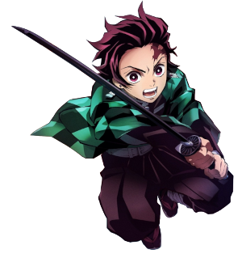
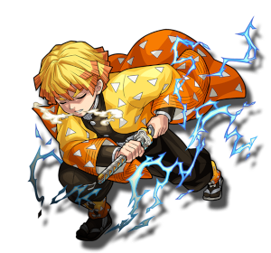
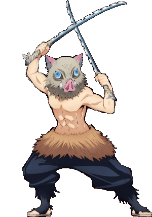

O trio novato
Tanjirou Kamado
Tanjiro🔗 é gentil por natureza e foi descrito por outros como tendo olhos muito gentis. Ele exibe uma grande dose de determinação e não desistirá uma vez que tenha uma meta a alcançar; o melhor exemplo disso é sua busca incansável para encontrar uma cura para Nezuko.
Zenitsu Agatsuma
Zenitsu🔗 é covarde, obstinado e ansioso, muitas vezes alegando que não tem muito tempo de vida devido ao perigoso trabalho de ser um Demon Slayer.
Inosuke Hashibira
Inosuke🔗 é um caçador de demônios, sendo um dos amigos e companheiro de viagem de tanjiro kamado e um dos principais protagonistas de kimetsu no yaiba: demon slayer.
0
0